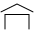
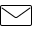
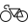
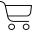
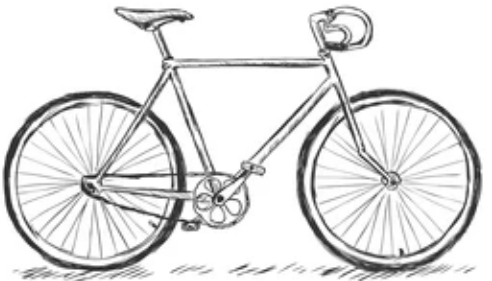
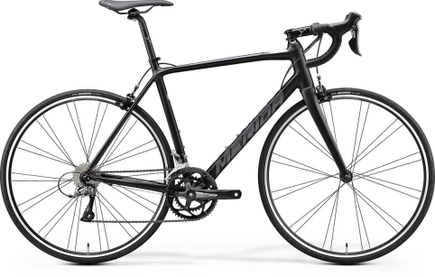
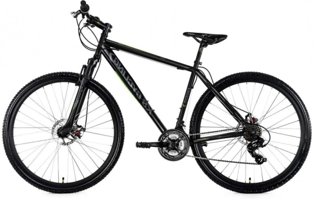
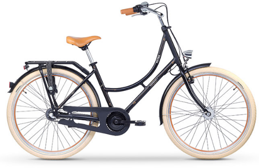

<!DOCTYPE html>
<html lang="pl">
  <head>
    <meta charset="UTF-8" />
    <meta http-equiv="X-UA-Compatible" content="IE=edge" />
    <meta name="viewport" content="width=device-width, initial-scale=1.0" />
    <link rel="stylesheet" href="style.css" />
    <title>Mazury - rowery</title>
  </head>
</html>  
  
  
<body>
 
  <nav> <div class = "nav">
   <a class="active" href=http://127.0.0.1:5500/index.html#index></a>
   <a class="contact" href=http://127.0.0.1:5500/contact.html></a>
  <a class="rowery" id="link" href=http://127.0.0.1:5500/bikes.html></a>  
  
  <a class="koszyk" href=http://127.0.0.1:5500/cart.html></a></div></nav>

  
  <div class = "first">
  <div class = "wstęp">
  <h1>Wybierz się na Mazury</h1>
   <p class = "tekst1--tekst"> Mazury to ultralekkie rowery tworzone z pasją w niewielkiej manufakturze w
    Szczytnie. Świetnie sprawdzą się zarówno na leśnej drodze, jak i w miejskiej
    dżungli.</p>
 <button class="btn-wszystkie" class = "btn--rower"> <a  href=http://127.0.0.1:5500/bikes.html>Pokaż rowery!</a></button></div>
  <div class = "rower1"></div></div>

 
 <h2>Jaki model jest idealny dla Ciebie?</h2> 
 
 <div class=" main">
  <div class="rower2"></div>
  <div class = "second"> 
  <div class =second--tekst><h3>Szosa</h3>
  <p class="tekst2">
    To rower dla miłośników prędkości i gładkich, asfaltowych tras. Świetnie
    sprawdzi się również w mieście. Jest szybki i ultralekki. Waży już od 7,8kg!
  </p>
  <button class="btn-szosa" id="sz1"><a  href=http://127.0.0.1:5500/bikes.html></a>Chcę kupić szosę!</button> </div></div>
  
  
  <div class ="third"><h4>Góral</h4>
    <div class ="third--tekst"><p class="tekst3">
    Pogromca w dzikim terenie. Rower na misje specjalne. Pozwala skakać przez
    przeszkody w lesie, jak i pojedzie po piaszczystej plaży. W razie potrzeby
    możesz na nim pokonać także górski strumień. Nigdy Cię nie zawiedzie.
  </p>
  <button class="btn-goral">Pokaż górale!</button></div></div>
  <div class = "third--rower"></div>


  <div class= "rower4"> </div>
  <div class = "miejski"><h5>Miejski</h5><div class ="miejski--tekst">
  <p class="tekst4">
    Wygodny jak fotel uszatek, pozwala na jazdę po mieście w luksusowych
    warunkach. Dojedziesz nim do pracy, na uczelnię, ale także na piknik pod
    miastem, ponieważ nie ogranicza go jedynie asfalt.
  </p>
  
  <button class="btn-miejski">Jadę w miasto!</button></div>  </div>
 
</div></div>
  <script src = "script.js"></script>
</body></html>
